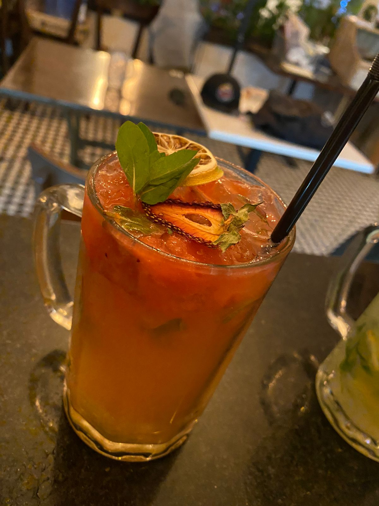

Para que un coctel sea perfecto debe tener ciertas características y todos los ingredientes deben armonizar de la mejor manera posible.Existen aditivos que son esenciales para preparar deliciosos tragos, además de los destilados, las garnituras (elemento de decoracion y los aromas que se incorporan a cada uno. Combinar todo este cúmulo de productos tiene su ciencia y como todo buen procedimiento, sigue una fórmula general

Coctel Perfecto
El Orden de los Ingredientes

El Sabor
Los ingredientes que se utilicen para la elaboración un orden. Primero se coloca la base o aditivo con hielo -si es que lo incluye la receta-, después el cuerpo y en caso de requerir los demás complementos como frutas, bitters,hierbas, van al último
El Aspecto
Otra de las características de un coctel perfecto tiene que ver con su forma. Es primordial que todo esté en armonía, por lo que los excesos en las decoraciones podría ser contraproducente para los tragos. Para cada trago hay que elegir la cristalería adecuada. ¿Sus colores son muy brillantes? Nada de usar vasos opacos. ¿Tiene mucha concentración alcohólica? Mejor elige un contenedor pequeño.
El Nombre
Aunque no lo creas, el nombre es una clave para saber si el coctel tiene más o menos alcohol y también funciona para conocer si es un trago más allegado hacia lo femenino o masculino, como por ejemplo,El Pink Daiquirí o el Kamikaze.
Paleta de Sabores
una gran cantidad de ingredientes que cuando se mezclan entre sí logran aromas deliciosos. La paleta de sabores es fundamental para saber que tipo de combinaciones quedan con los diferentes licores, jugos o bases.